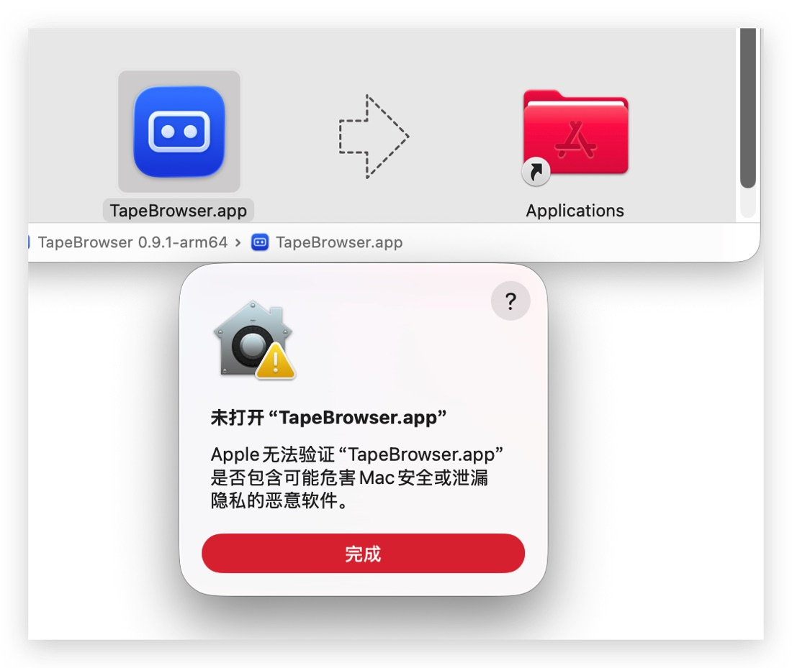
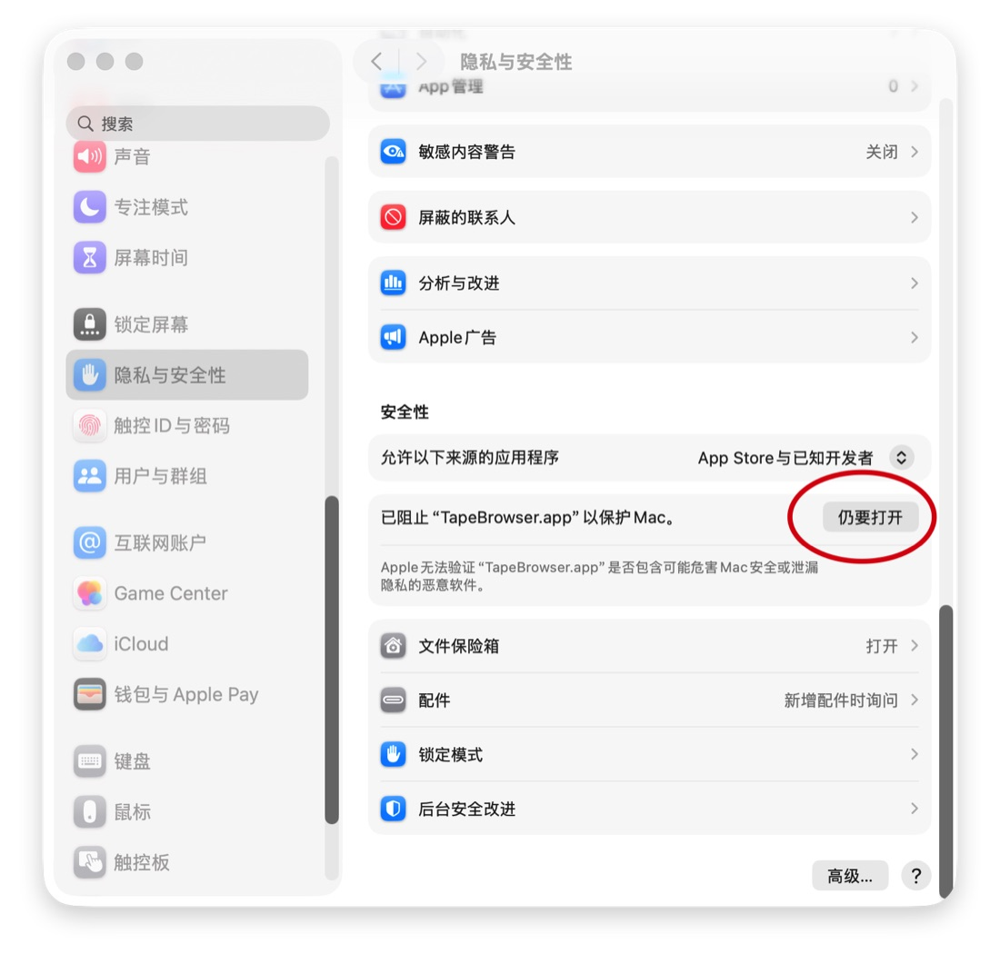

DeWEB 特性
普通浏览器做不到、只有去中心化网站才需要的能力。
tape:// 直接读链
网站文件存在 TapeKit 电路的链上容器里，TapeBrowser 直接从公共节点读取，不依赖任何网关服务器。
按电路名访问
输入 4454.0、#4454@0、1.2.248（X Layer）或 8888.tape 都能打开同一个网站。
数字串和钱包地址
输入 42460 这样的数字串，自动尝试所有切分；输入钱包地址，打开它在三条链上持有的所有网站。
三条链
BNB Chain、X Layer（区号 2）、Base（区号 3）并行查询，各自的节点池，地址栏显示网站所在的链。
哈希校验
每个文件下载后都核对长度和链上记录的 SHA-256，节点或网络篡改了内容会直接拒绝显示。
多节点交叉校验
再找两个不同的节点核对容器和文件哈希，单个节点作恶伪造不了，不一致时按钮变红。
持有人变更提醒
网站换了持有人（被转手或卖掉）时，再次打开会提醒，书签和最近访问里也会标出来。
签名风险解读
无限额授权、授权全部 NFT、离线签名授权、盲签等高危请求翻成一句话，默认按钮是「拒绝」。
外部脚本和代码变更
网站运行了不在链上的脚本时标出来；上次签名之后网站改过代码，签名时列出改了哪些文件。
钱包不导入私钥
桥接系统浏览器里的钱包扩展（MetaMask 等），不依赖 WalletConnect 这类中心化中继，每次签名都先显示真实来源。
全站目录
自动收录三条链上所有有首页的网站，可以按标题、编号、持有人搜索，首页更新过的标「有更新」。
离线兜底
文件按 SHA-256 缓存在本机，每次仍先查链上最新版本；读链失败时显示上次缓存的版本。
TapeBrowser 能证明你看到的内容来自链上、没有被篡改，但判断不了网站作者本身有没有恶意。签名和交易前请自己核对。
下载
最新版本 0.9.1，发布于 2026-10-05。所有版本见 GitHub Releases。
| 平台 | 文件 | 下载 |
|---|---|---|
| macOS（Apple 芯片） | TapeBrowser-0.9.1-mac-arm64.dmg | 下载（121 MB） |
| macOS（Intel） | TapeBrowser-0.9.1-mac-x64.dmg | 下载（127 MB） |
| Windows（x64） | TapeBrowser-0.9.1-win-x64-setup.exe | 下载（106 MB） |
| Linux（x86_64） | TapeBrowser-0.9.1-linux-x86_64.AppImage | 下载（119 MB） |
每个文件的 SHA-256 见 SHA256SUMS.txt。安装包还没有签名，第一次打开时：
- macOS：按下面的步骤操作
- Windows：SmartScreen 提示时点「更多信息 → 仍要运行」
- Linux：先
chmod +x再运行 AppImage
macOS 第一次打开
-
打开下载的 dmg，把 TapeBrowser 拖进「Applications」（应用程序），再双击打开。系统会提示「Apple 无法验证」，点「完成」。

-
打开「系统设置 → 隐私与安全性」，滚到「安全性」一栏，在「已阻止 TapeBrowser.app 以保护 Mac」旁边点「仍要打开」，输入密码确认。之后就能正常打开了。

如果提示的是「已损坏，无法打开」（0.9.0 及更早的版本会这样），在终端运行 xattr -dr com.apple.quarantine /Applications/TapeBrowser.app 后再打开。
更新日志
0.9.1 2026-10-05
- 修复：从网上下载的 macOS 安装包在 Apple 芯片的 Mac 上提示「已损坏，无法打开」。现在整个应用都做了完整的临时签名，系统只会提示无法验证开发者
- 更新了 macOS 第一次打开的方法说明
0.9.0 2026-10-04
- 签名风险解读：无限额授权、授权全部 NFT、Permit / Permit2 离线授权、Seaport 挂单、
eth_sign盲签标为高危，默认按钮改为「拒绝」 - 代币名称和精度直接从链上读；金额单位跟着链显示 BNB / OKB / ETH（以前总是显示 BNB）
- 网站运行了不在链上的脚本或接口时，按钮显示「含外部脚本」，面板列出地址
- 上次同意签名之后网站改过文件，签名时列出改了哪些文件
- 按 GPL-3.0-or-later 开源，欢迎提 PR
0.8.2 2026-10-03
- 新增 macOS Intel（x64）安装包
- 安装包统一命名为
TapeBrowser-版本-平台-架构
0.8.1 2026-10-02
- 第一个公开发布的版本，提供 macOS、Windows、Linux 安装包
- 「关于」里显示 GitHub 仓库地址
0.8.0
- 中英文界面，默认跟随系统语言，可以在设置里切换
0.7
- 多节点交叉校验
- 持有人变更提醒；最近访问和书签里标「有更新」「持有人已变」
- 「持有的全部网站」：列出某个持有人的所有网站
0.6
- 目录改为每小时增量检查、每周完整扫描
- 新标签页支持缩放
0.5
- 支持 X Layer（区号 2）和 Base（区号 3），每条链各自的节点，连接时自动切换钱包的链
- 地址栏显示网站所在链的彩色标签
- Windows 和 Linux 打包
0.4
- 全站目录：自动扫描链上所有有首页的网站
0.1 – 0.3 2026-10-01
tape://浏览、数字串枚举、钱包地址扫描、桥接浏览器钱包扩展- 页内查找、缩放、历史记录和书签
- 网站信息面板；本机内容缓存，读链失败时用缓存兜底